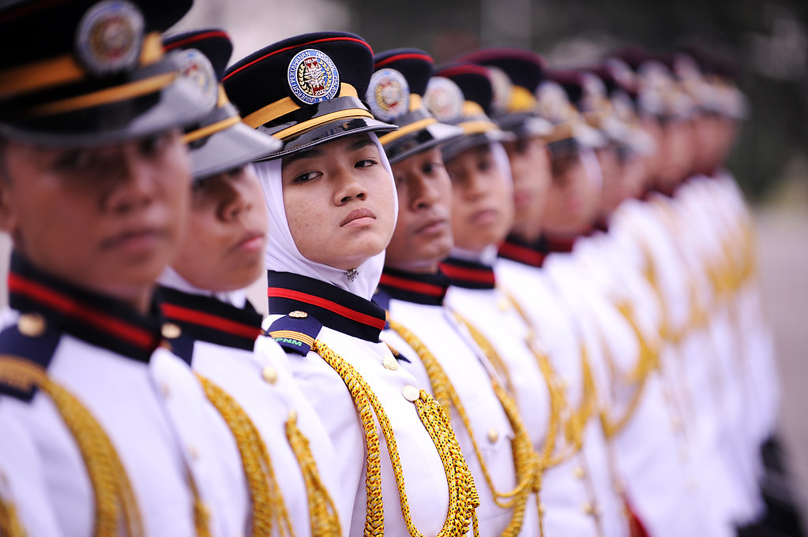

The safety guidance for military cadets serves several important purposes, aiming to ensure the well-being and development of cadets within a military training environment. These purposes include:
Physical Well-being: The primary purpose of safety guidance is to protect cadets from physical harm. This includes preventing injuries during physical training, drills, and other activities. It also involves promoting healthy practices such as proper nutrition, hydration, and adequate rest.
Training Effectiveness: Safety measures contribute to the overall effectiveness of military training. When cadets feel safe and secure, they can focus more on learning and developing their skills. A safe training environment allows for realistic and challenging exercises without unnecessary risks.
Long-term Health and Fitness: Beyond the immediate training period, safety guidance contributes to the long-term health and fitness of military cadets. Emphasizing safe and healthy practices during training helps establish habits that can contribute to a cadet's overall well-being throughout their military career.
Across Obstacles:
Tempur Tanpa Senjata(TTS):
Military Loaded March Test(UJL):
Military Foot Drill:
Shooting Training(M4):
Safety is paramount during military shooting training, especially when using firearms like the M4. Here are essential safety guidelines for military shooting training with the M4:
Qualified Instructors:
Range Safety Briefing:
Firearm Safety Rules:
Instill and enforce the basic firearm safety rules:
Safety Gear:
Clear Communication:
Ammunition Control:
Designated Firing Line:
Range Officer:
Muzzle Discipline:
Firearm Condition Checks:
Proper Shooting Positions:
Emergency Procedures:
No Alcohol or Drugs:
Secure Weapon Storage:
Post-Training Debriefing:
Military Bagpack:
When cadets use military backpacks, it's essential to prioritize their safety and well-being. Here are safety guidelines for cadets using military backpacks:
By implementing these safety guidelines, cadets can use military backpacks effectively while minimizing the risk of injuries and ensuring a positive and safe learning experience.
Dehydration:
Centre for Teaching and Learning (CTL), Level 1,
Deputy Vice Chancellor (Academic and International),
Chancellery Building, National Defense University of Malaysia (NDUM),
57000 Kem Perdana Sungai Besi, Federal Territory of Kuala Lumpur
Phone : 03 - 9051 3400 ext. : 7622616
E-mail : ctl@upnm.edu.my